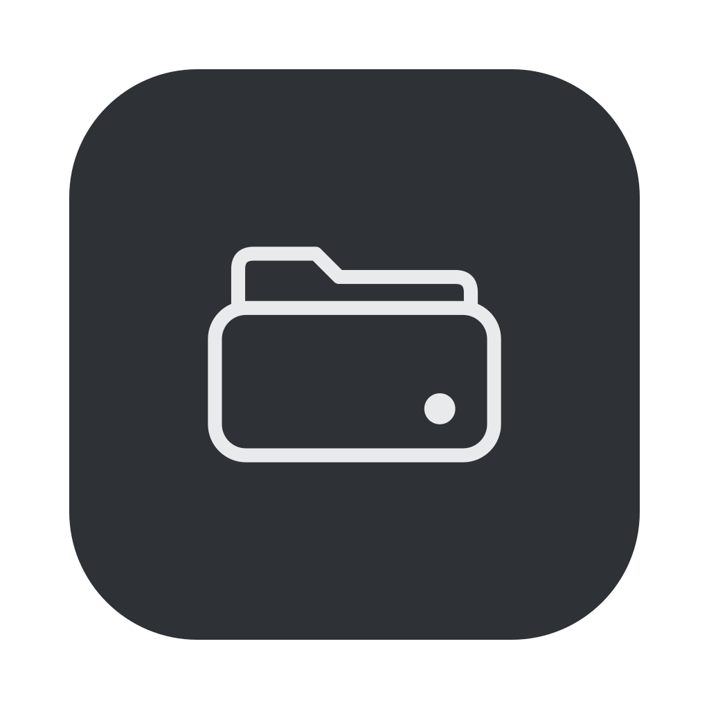
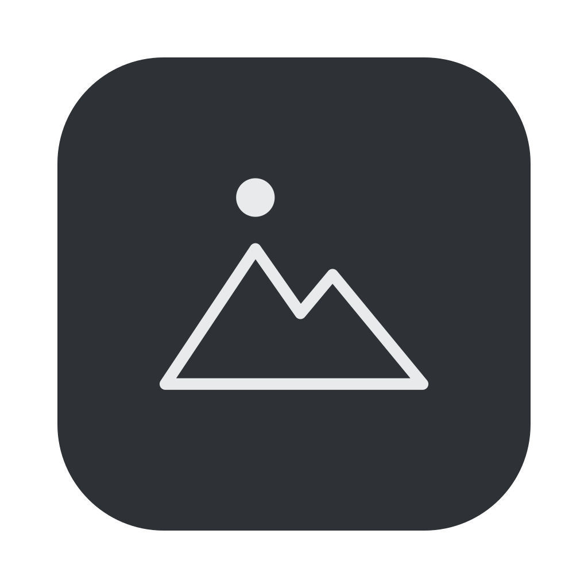
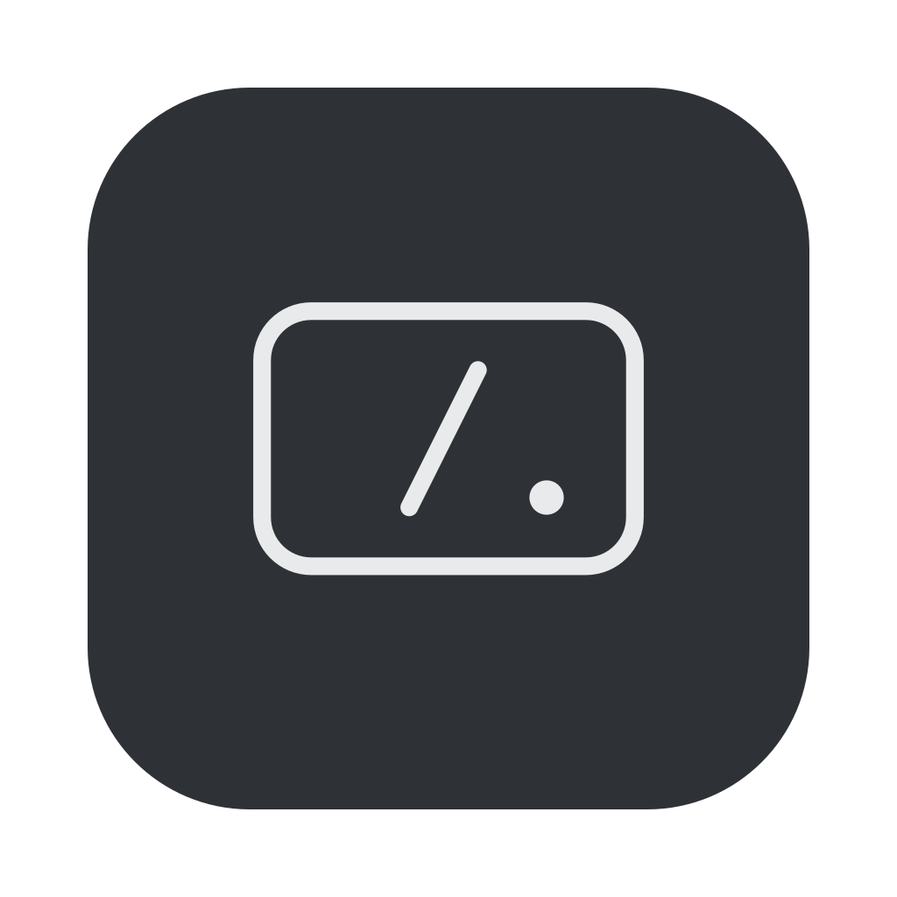
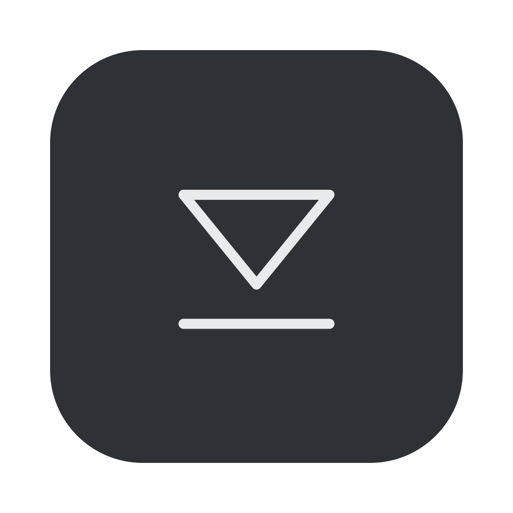

MOUNTPOINT – APP-ICON + MENÜLEISTE
Menüleiste in Originalgröße (18 px), dunkel und hell.

I01 Laufwerk mit Ordnerreiter
I02 Ordner → Laufwerk
I03 Standort-Pin mit Ordner
I04 Berg + Punkt (Mount·Point)
12:41
12:41
I05 Zwei Volumes gestapelt
I06 Root-Schrägstrich im Laufwerk
I07 Ordner mit Pinnadel
I08 Poller (Schwester von Ferry)
I09 Festplatten-Scheibe mit Arm
I10 Einhängen (umgedrehtes Auswerfen)